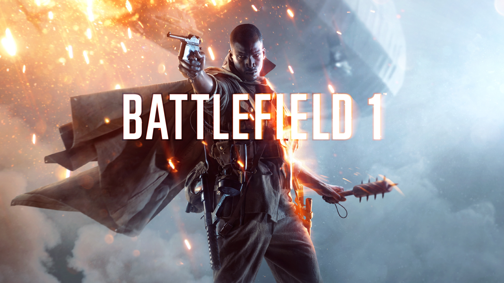

Top 5 Videogames


- 

The game is set in 1960, and follows Jack who discovers the underwater city of Rapture. Built by business magnate Andrew Ryan to be an isolated utopia, the discovery of ADAM, a genetic material which grants superhuman powers, initiated the city's turbulent decline.
In God of War, players control Kratos, a Spartan warrior who is sent by the Greek gods to kill Ares, the god of war. As the story progresses, Kratos is revealed to be Ares' former servant, who had been tricked into killing his own family and is haunted by terrible nightmares.
The story is set in 1899 and follows the exploits of outlaw Arthur Morgan, a member of the Van der Linde gang, in a fictionalized representation of the Western, Midwestern, and Southern United States. Arthur must deal with the decline of the Wild West whilst attempting to survive against government forces, rival gangs, and other adversaries.
It is set in the period of World War I, and is inspired by historical events. Players can make use of World War I weapons, including bolt-action rifles, submachine guns, automatic and semi-automatic rifles, artillery, flamethrowers, and poison gas to combat opponents.
Set in an alternative version of the year 2015, the player controls an elite multinational paramilitary organization called XCOM during an alien invasion of Earth.